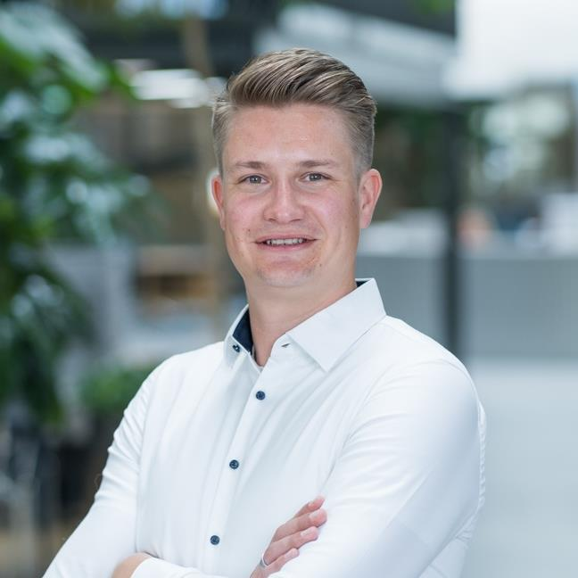

Niels Uitterdijk
Experienced & entrepreneurial cloud architect driving innovation with a flair for AKS & machine learning platforms.

Professional Experience
Expert Cloud Engineer
Jun 2023 – ongoing | Zühlke Engineering AG | Zurich
- Led the Cloud Architecture for multiple large-scale solutions, from GPT-4 landing zones, strategic AKS migration platforms and full IIoT solutions.
- Succesfully provided strategic Cloud Consulting for governance, migration & vulnerability management.
- Bids & Sales: Proactively pushed sales activities in the IoT sector, leading the technical side of various bids, including the provisional architecture for a 1.5M CHF RfP.
- Technical Execution: Actively developed IaC with Terraform, Ansible, Bicep, (a.o.) to configure, automate and secure infrastructure provisioning & drive DevOps practices.
- Team / Deliver Lead: took ownership of the delivery and guided or led the teams through various projects.
Founder & CTO
Mar 2020 – Mar 2023 | Amplo AG | Zurich
- Founded a tech startup, secured 1.6M CHF funding, hired seven engineers and launching multiple products.
- Developed an event-driven predictive maintenance platform, automating 90% of the RCA tickets for various clients.
- Established a strong culture of collaboration, innovation, and customer-focus, without having any employee quit during the tougher times.
- Served over 1'000 predictive models through an inhouse developed AutoML pipeline, supporting the various products.
Cloud & ML Freelancer
Oct 2019 – Aug 2020 | Upwork | Remote
Acquired ‘Rising Talent’ status, with a rating of 4.92 / 5.0
Machine Learning Intern
Feb 2019 – Aug 2019 | Tritium Ltd. Pty. | Brisbane
Analysed failure data and deployed predictive models in AWS lambda, connected with telemetry in S3
to improve successful charger rate by ±5 by catching two failures prematurely.
Powertrain Department Manager
Jul 2016 – Aug 2017 | Formula Student Team Delft | Delft
Leading my department of eleven engineers to design & build the battery, motorcontrollers & motors
of our 4WD electric racecar, Competed in FS Hungary (2nd), FS Spain (4th) and FS Germany (12th).
Teaching Assistant Advanced Dynamics
Aug 2015 – Feb 2016 | Technical University of Delft | Delft
Education
MSc Systems & Control
Sep 2017 – Feb 2020 | Technical University of Delft
MSc thesis on online distributionally robust optimization for fault detection for Tritium's 5'000
public DC Fast chargers (Grade 8.5 / 10.0).
BSc Mechanical Engineering
Sep 2013 – Jul 2016 | Technical University of Delft
Extra-curricular
Board - Secretary
Sep 2016 – Aug 2017 | SRC Thor | Delft
Exchange Minor
Aug 2015 – Feb 2016 | Lund University | Lund, Sweden
BSc Honours Programme
Sep 2014 - Aug 2015 | Technical University of Delft
Elected from the top 5% students.
Skills
Cloud Platforms
Azure (4y), GCP (1y), AWS (3m)
Security & Governance
Sentinel, Policy, Zero Trust
Architecture & Design
High Availability, Disaster Recovery, Autoscaling, Networking
Infrastructure as Code
Terraform, Bicep, ARM, Ansible
DevOps & Automation
CI/CD, Gitlab, Github, Azure DevOps, ArgoCD, Ansible
Data & AI
SQL, Data Lakes, MLOps, Messaging & Event streaming, GPT
Notable Projects
Develop Strategic AKS Infra & Automation
May '24 - ongoing | 6 months | Senior Cloud Engineer & Tech Lead
- AKS
- Helm
- Ansible
- Terraform
- Istio
- Gitlab
Azure Cloud Security & Governance Concept
Oct '23 - Apr '24 | 7 months | Cloud Lead
- Sentinel
- Terraform
- Policy
- Governance
- Security
- Cloud Migration
GPT-4 Landing Zone & Underwriter Assistant
Oct '23 - Aug '24 | 10 months | Cloud Lead
- OpenAI
- Azure DevOps
- AKS
- Terraform
- SQL Database
- .NET
IIoT Cloud Architecture for Medical Machines
Nov '23 - Jan '24 | 3 months | Cloud Architect
- Azure B2C
- HA/DR
- Front Door
- AKS
- IoT Hub
- Stream Analytics
- Cloud Migration
IoT Platform for EV Chargers
Jun '22 - Apr '23 | 10 months | Tech Lead
- AKS
- IoT Hub
- Data Lake
- Functions
- Postgres
- RabbitMQ
- Python, TS
- Azure DevOps
Smart Maintenance Platform for Industrial Machinery Manufacturers
Jan '21 - Jun '22 | 1.5 years | Tech Lead
- GKE
- GCP Dataflow
- GCP IoT Core
- Azure
- Python, JS
- Github Actions
Solar Manager AG Underperformance Detection
2020 | 6 months | Machine Learning Engineer
- AWS EC2
- AWS S3
- Python
- Github Actions
Saudi Aramco Processhub
2019 | 9 months | Machine Learning Engineer
LNG transportation requires a large industrial compressor for liquification which is hard-to-control and
a single point of failure. We build a recommendation engine using a predictive model to support the
control engineers, reducing flaring by 9%.